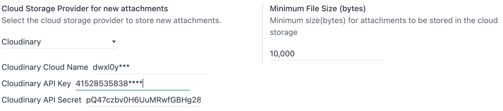
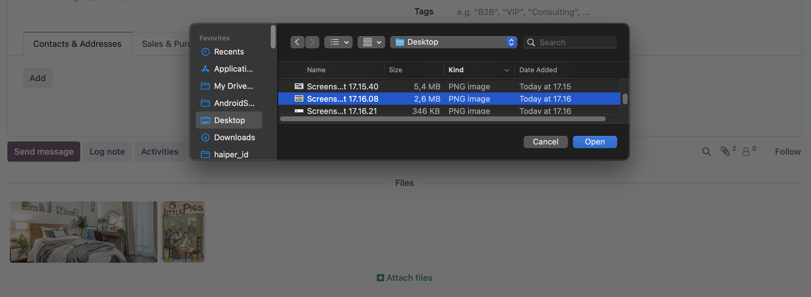
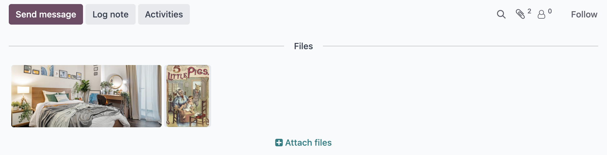

Cloud Storage Cloudinary
Seamlessly integrate Odoo with Cloudinary to store and manage chatter attachments in the cloud. This module extends the cloud_storage framework to offload files to Cloudinary, offering scalable, secure storage for your Odoo attachments. Perfect for businesses handling images, PDFs, and other documents in chatter.
Why This Module Matters?
In today’s fast-paced business environment, managing attachments efficiently is crucial. This module leverages Cloudinary—a leading cloud storage platform—to reduce server load, enhance scalability, and secure your data. Whether you’re a small business or an enterprise, offloading chatter attachments to the cloud saves resources, speeds up workflows, and ensures your Odoo instance stays lightweight and responsive.
Key Features
- Upload attachments directly to Cloudinary from Odoo chatter.
- Securely store files with signed URLs.
- Easy configuration via Odoo settings.
- Requires the cloud_storage base module.
Installation
- Install the cloud_storage module from Odoo Apps.
- Install the
cloudinaryPython package:pip install cloudinary. - Install this module (Cloud Storage Cloudinary) via Odoo Apps.
Configuration
- Go to Settings > Technical > Cloud Storage.
- Set Cloud Storage Provider to "Cloudinary".
- Enter your Cloudinary Cloud Name, API Key, and API Secret.
- Save the settings to start storing attachments in Cloudinary.

Screenshots & Installation
1. Enter Cloudinary Cloud Name, API Key, and API Secret.

2. Open Document, click attachment, select file to upload

3. All files attached

4. Check files on cloudinary console